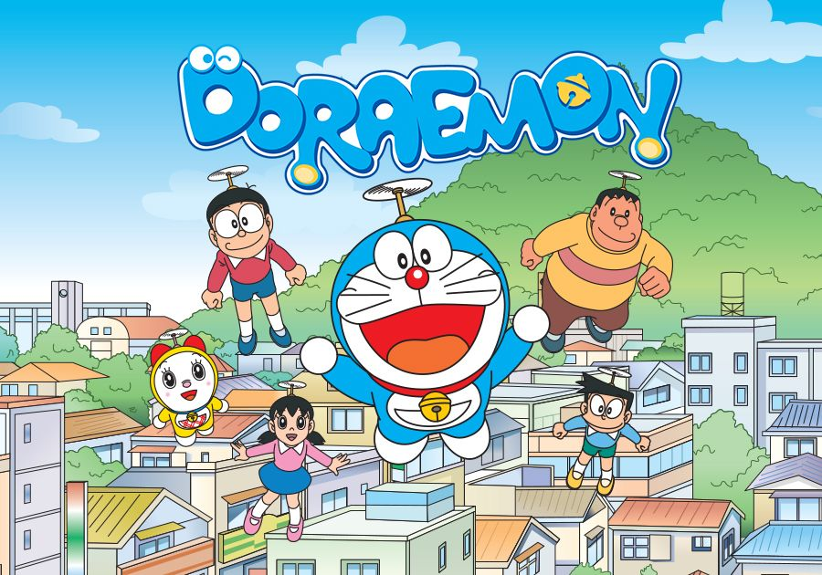
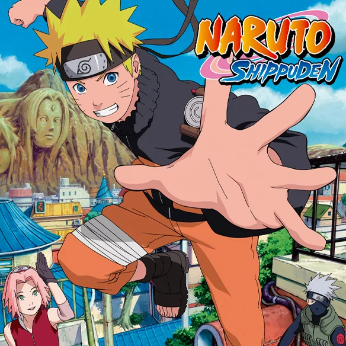
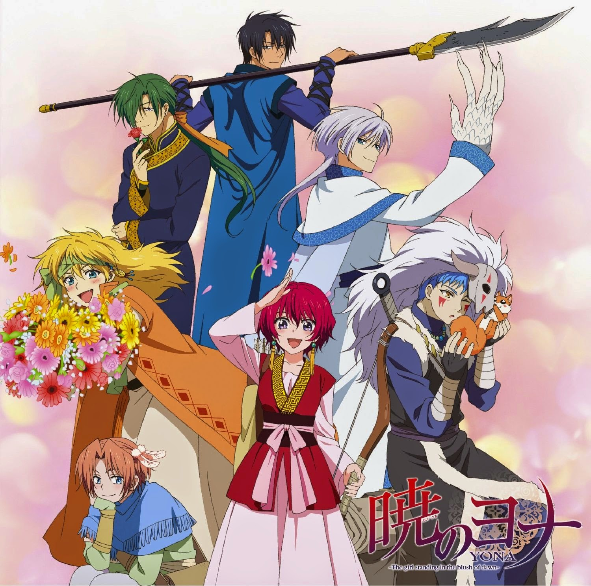
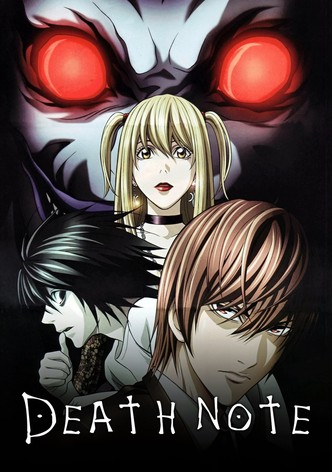
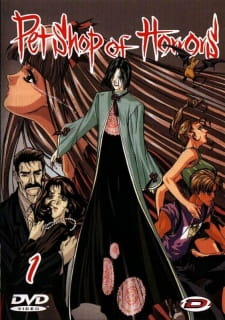
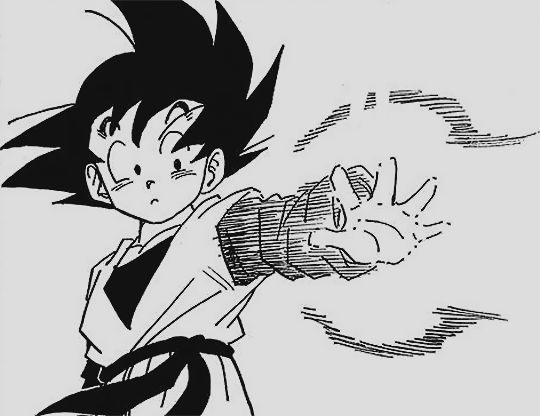
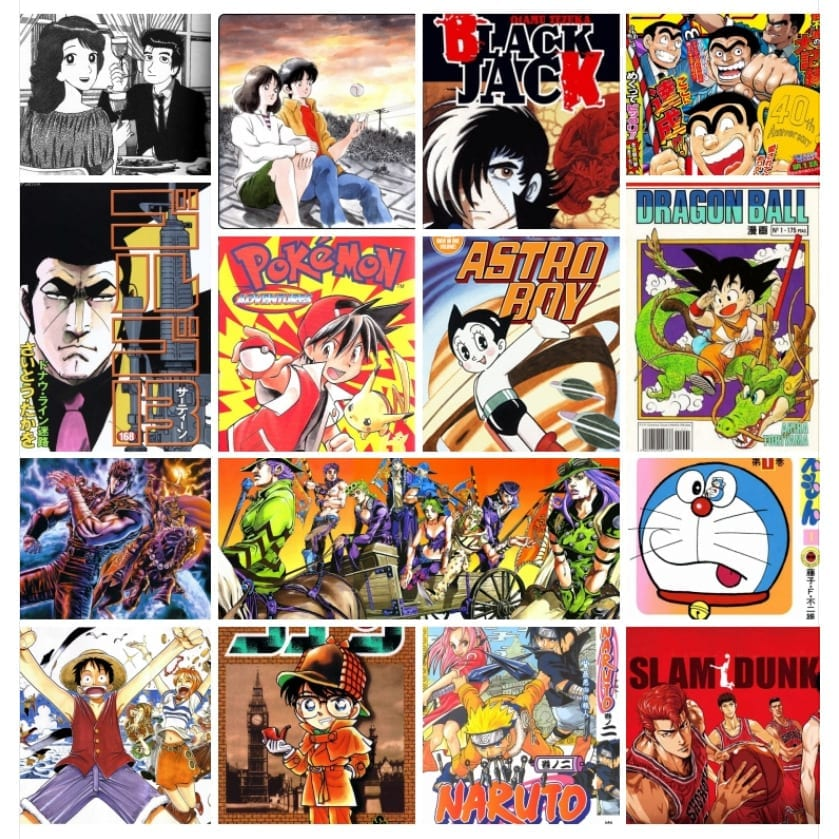
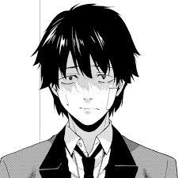

-Kodomo manga: es un tipo de manga dirigido a niños pequeños. Una particularidad de este género es que muchas personas adultas se interesen por el kodomo (un 70% de la población japonesa adulta, según recientes encuestas), probablemente por ser un producto de fácil consumo, con su estilo amable y su trama sencilla.
Uno de los Kodomo manga más fomosos es Doraemon.

-Shōnen manga: es un tipio de manga dirigido a chicos adolescentes. Son series con grandes dosis de acción, en las que a menudo se dan situaciones humorísticas. Destaca el compañerismo entre miembros de un colectivo o de un equipo de combate. Muchos de estos mangas han devenido en anime, que es el nombre que reciben las películas de animación japonesas y los dibujos animados emitidos en televisión.
El shōnen por excelencia es Naruto, que en España ha vendido más de un millón de ejemplares.

-Shōjo manga: es un tipo de manga dirigido a chicas adolescentes. Sus argumentos son siempre muy inocentes, historias de romance y fantasía, aunque tras la primera guerra del Golfo se desarrollaron personajes femeninos peleones, que luchan para proteger el destino del planeta o de una comunidad.
Uno de los Shōjo manga más fomosos es Akatsuki no Yona.

-Seinen manga: es un tipo de manga dirigido a hombres jóvenes y adultos. Algunos temas frecuentes en el seinen son la violencia y la política, y sus tramas van desde lo vanguardista hasta lo erótico. Suele ir dirigido a hombres, pero hay muchísimas mujeres que leen seinen.
Una de las series más aclamadas es Death Not.

-Josei manga: dirigido a mujeres jóvenes y adultas. Apareció en la década de 1980, cuando las chicas que leían manga shōjo buscaban contenido más maduro y de corte más realista. En estas historietas aparecen mujeres adultas, que ya han dejado atrás el instituto, y su dibujo es más realista, desaparecen los ojos grandes y vidriosos del shōjo, y los romances son menos idealizados y más reales.
Uno de los Josei manga más fomosos es Pet Shop of Horrors.

|  |
||
|  |
 |